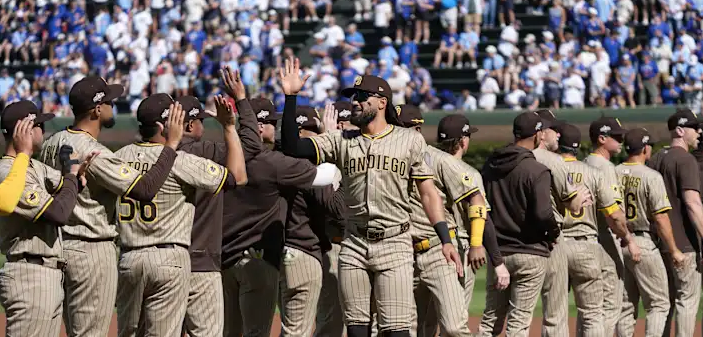

San Diego Padres Information Page!
About the San Diego Padres

The San Diego Padres are a professional baseball team based in San Diego, California, competing in the Western Division of Major League Baseball's National League. The franchise was established in 1969 as an expansion team, playing their home games at Petco Park, one of the most beautiful ballparks in all of baseball, situated in the heart of downtown San Diego.
Throughout their history, the Padres have produced some of the greatest players the game has ever seen. Tony Gwynn, widely regarded as one of the best pure hitters in baseball history, spent his entire 20-year career with the Padres, finishing with a .338 lifetime batting average and 8 batting titles. Other legendary Padres include Hall of Fame closer Trevor Hoffman, who spent 16 seasons in San Diego and retired as the all-time saves leader, and Dave Winfield, a 12-time All-Star who began his Hall of Fame career with San Diego.
In recent years, the Padres have transformed into one of baseball's most exciting teams, built around superstar shortstop Fernando Tatis Jr. and a roster full of young talent. The team made a memorable postseason run in 2022, defeating the Los Angeles Dodgers in the NLDS before falling to the Philadelphia Phillies in the NLCS, reigniting passion for baseball across all of San Diego.